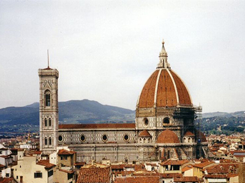
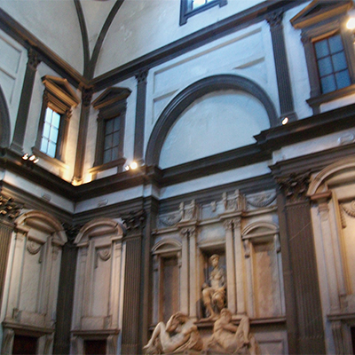

Osnovni podaci:
| Naziv: | Bazilika San Lorenzo |
|---|---|
| Adresa: | Piazza di San Lorenzo, 9 Firenca |

Bazilika sv. Lovre (tal. San Lorenzo) je jedna od većih firentinskih crkava poznata po svojoj renesansnoj unutrašnjosti i po kapelama, u kojima su pokopani članovi obitelji Medici.
San Lorenzo je tlocrtno tipična trobrodna bazilika latinskog križa sa transeptom (poprečni brod). U transeptu bazilike se sa lijeve i desne strane nalaze; Stara i Nova sakristija. U nastavku glavnog broda bazilike je kasnije dograđena Kapela vladara s oltarima, koja po svojim dimenzijama značajno odskače od ostalih prostora crkve, njena kupola nadvisuje sve ostale dijelove bazilike. Uz Baziliku San Lorenzo je samostan u kojem se nalazi knjižnica Medici-Laurenziana. Kasnije dogradnje - Nova sakristija i knjižnica Medici-Laurenziana napravljene su po projektu Michelangela.


Na mjestu San Lorenza, stajala je starija crkva iz 4. stoljeća koja je kompletno obnovljena u romaničkom stilu u 11. stoljeću, i posvećena 1059., nju su firentinci 1418. odlučili povećati i obnoviti po projektu tada mladog arhitekta Filippa Brunelleschija. Financijer je bio Giovanni di Bicci de' Medici. Taj novi prostor trebao je postati mjesto za pokop Medicejaca - kasnije je nazvan Stara sakristija.
Brunelleschi je nacrt napravio 1421. Gradnja je započela 1422. ali se preuređenje odužilo zbog ratova i nedostatka novca, nakon sedemnajst godina je Cosimo de' Medici preuzeo troškove izgradnje. 1446. je Brunelleschi umro, tako da je gradnju nastavio Antonio Manetti i dovršio 1448.
Po Michelangelovom projektu su portal i galerija za smještaj relikvija koje je papa Klement VII. poklonio crkvi, izvedeni 1532. godine u unutrašnjosti na ulazu u baziliku. Uz crkvu je podignut zvonik 1741. po projektu Ferdinanda Ruggierija.
Obnova bazilike San Lorenzo započela je izgradnom Stare sakristije. To je zapravo kapela, jednostavnog tlocrta u obliku kocke, koje se u svom gornjem dijelu preko pandativa nastavlja u rebrastu kupolu. Brunelleschi je upotrijebio iste elemente, kao kod predgradnje glavnog broda, kombinirao je kontrast između ukrasne plastike isklesane iz tamnog plavo-sivog mramora i bjeline zidova.
Kiparsku plastiku izveo je Donatello, ukrasni gornji vijenac formiraju kerubini, u pendativ je smjestio višebojne okrugle reljefe s prizorima iz života sv. Ivana Evangelista. Izveo je oltar sa čipkastom kamenom ogradom, brončana vrata sa obje strane oltara sa reljefima četrdeset mučenika i apostola iznad kojih su reljefi sv. Kuzme i sv. Damjana i sv. Stjepana i sv. Lovre.
U središtu kapele leži sarkofag u koji je pokopan - Giovanni Bicci Medici i njegove žene Picarde Bueri. Lijevo od ulaza leži elegantna grobnica Piera i njegova brata Giovannija koju je po narudžbi Lorenza Veličanstvenog isklesao Andrea Verrocchio 1472.

Kardinal Giulio di Giuliano de' Medici je 1520. naručio projekt od Michelangela za izgradnju Nove sakristije. Michelangelo je u tlocrtu - slijedio u osnovi koncept Brunelleschijeve Stare sakristije, ali je pod kasetiranu kupolu ugradio i mezanin i tako dobio daleko višu prostoriju. Čitav prostor je harmonično podijelio na tamne i svijetle dijelove
Grobove je postavio na tri zida, na zidu nasuprot oltara su grobnice Lorenza Veličanstvenog i njegovog ubijenog brata Gulijana, a na bočnim zidivima grobovi Lorenzovog najmlađeg sina, - Giulijana Vojvode od Nemoursa i unuka Lorenza II. Vojvode od Urbina. Te dvije bočne grobnice je Michelangelo napravio sa sjedećim figurama pokojnika, ispod kojih su po dvije ležeće alegorične figure. Nakon 13 godina rada na tom projektu (1521. - 1534.), Michelangelo je napustio Firencu, tako da je ta kapela ostala nedovršena, kao i grobovi Lorenza i Gulijana koji su trebali dobiti puno više kipova. Ipak je uspio dovršiti kip Madonne Medici za oltar kapele.
| Naziv: | Bazilika San Lorenzo |
|---|---|
| Adresa: | Piazza di San Lorenzo, 9 Firenca |